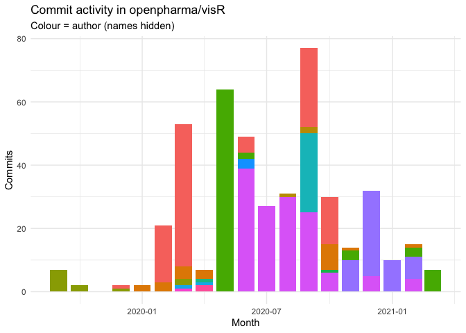

The goal of visR is to enable fit-for-purpose, reusable clinical and medical research focused visualizations and tables with sensible defaults and based on sound graphical principles.
Motivation
By using a common package for visualising data analysis results in the clinical development process, we want to have a positive influence on
- choice of visualisation by making it easy explore different visualisation and to use impactful visualisations fit-for-purpose
- effective visual communication by making it easy to implement best practices
We are not judging on what visualisation you chose for your research question, but want facilitate and support good practice.
You can read more about the philosophy and architecture in the repo wiki.
Lifecycle and status
The package is still experimental and under active development with a current focus on developing a stable API.
Installation
Install the development version from GitHub with:
devtools::install_github("openpharma/visR")Example
This is a basic example to demonstrate how the API can be used to add layers to a visualisation. In this example a time to event analysis. The example calculates stratified Kaplan-Meier by treatment and then plots. Additional functions can be used to add uncertainty intervals, censoring information and a risk table.
library(visR)
library(survival)
library(dplyr)
library(tidyr)
library(ggplot2)
# BELOW NO LONGER WORKS
# adtte %>%
# estimate_KM(strata = "TRTP", conf.int = 0.90) %>%
# vr_plot(legend_position = "right", x_unit = "Days") %>%
# add_CI(style = "ribbon",
# linetype = 3) %>%
# add_CNSR(shape = 3, size = 1) %>%
# add_risktable(
# min_at_risk = 3,
# statlist = c("n.risk", "n.event", "n.censor"),
# label = c("At risk", "Event", "Censor"),
# collapse = F
# )Contribution
Please note that the ‘visR’ project is released with a Contributor Code of Conduct. By contributing to this project, you agree to abide by its terms.

#> The following name changes were identified (40 in total):
#> ● R/{pvr_cross_tab.R => vr_cross_tab.R}
#> ● R/{pvr_attrition.R => vr_plt_attrition.R}
#> ● R/{pvr_stacked_barchart.R => vr_stacked_barchart.R}
#> ● R/{vr_plt_attrition.R => vr_attrition.R}
#> ● R/{vr_kaplan_meier.R => vr_est_kaplan_meier.R}
#> ● man/{pvr_attrition.Rd => vr_attrition.Rd}
#> ● R/{vr_plot_forest.R => vr_plt_forest.R}
#> ● man/{vr_plot_forest.Rd => vr_plt_forest.Rd}
#> ● R/{vr_KM_risktable.R => add_KM_risktable.R}
#> ● R/{add_KM_CI.R => add_CI.R}
#> ● R/{add_KM_risktable.R => add_risktable.R}
#> ● R/{vr_KM_plot.R => vr_plot.R}
#> ● {R => examples}/example.R
#> ● {R => examples}/example_api.R
#> ● {R => examples}/example_vignette_recreation.R
#> ● R/{add_COX_HR.R => get_COX_HR.R}
#> ● examples/CDISC SDTM ADaM Pilot Project m5toc.pdf => CDISC SDTM ADaM Pilot Project m5toc.pdf
#> ● .github/workflows/{r_cmd_check-MasterDevelop.yml => R-CMD-check.yml}
#> ● .github/workflows/{CI_CD.yaml => CI-CD.yaml}
#> ● docs/articles/Example_analysis_files/figure-html/{unnamed-chunk-4-1.png => unnamed-chunk-5-1.png}
#> ● R/{vr_KM_est.R => estimate_KM.R}
#> ● man/{vr_KM_est.Rd => estimate_KM.Rd}
#> ● R/{vr_create_risktable.R => get_risktable.R}
#> ● R/{vr_render_table.R => render_table.R}
#> ● R/{render_table.R => render.R}
#> ● R/{vr_plot.R => plot.R}
#> ● R/{vr_utils.R => utils.R}
#> ● R/{vr_create_tableone.R => create_tableone.R}
#> ● R/{vr_table_one.R => table_one.R}
#> ● R/{create_tableone.R => get_tableone.R}
#> ● R/{table_one.R => tableone.R}
#> ● vignettes/{Example_analysis.Rmd => Example_analysis2.Rmd}
#> ● vignettes/{Example_analysis2.Rmd => Example_analysis.Rmd}
#> ● .github/workflows/{docs => makedocs.yml}
#> ● R/{utilities.R => utils_plot.R}
#> ● R/{utils.R => utils_table.R}
#> ● R/{utilities.R => utils_plot.R}
#> ● R/{utils.R => utils_table.R}
#> ● R/{utilities.R => utils_plot.R}
#> ● R/{utils.R => utils_table.R}
#> chr [1:498] "R/vr_attrition.R" "R/vr_attrition.R" "R/vr_attrition.R" "R/vr_attrition.R" ...Code coverage
Last time readme built.
covr::package_coverage()
#> visR Coverage: 27.07%
#> R/add_annotation.R: 0.00%
#> R/add_CI.R: 0.00%
#> R/add_CNSR.R: 0.00%
#> R/add_risktable.R: 0.00%
#> R/get_COX_HR.R: 0.00%
#> R/get_pvalue.R: 0.00%
#> R/get_quantile.R: 0.00%
#> R/get_summary.R: 0.00%
#> R/render.R: 0.00%
#> R/style_visR.R: 0.00%
#> R/tableone.R: 0.00%
#> R/utils_plot.R: 0.00%
#> R/vr_attrition_table.R: 0.00%
#> R/vr_attrition.R: 0.00%
#> R/utils_table.R: 30.77%
#> R/get_risktable.R: 64.41%
#> R/plot.R: 84.04%
#> R/tidyme.R: 91.67%
#> R/estimate_KM.R: 96.08%
#> R/get_tableone.R: 100.00%
#> R/utils_pipe.R: 100.00%